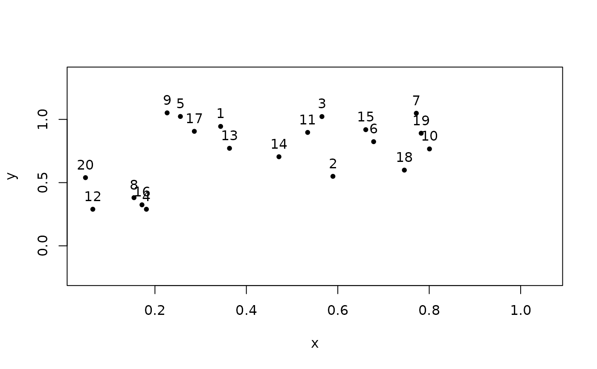
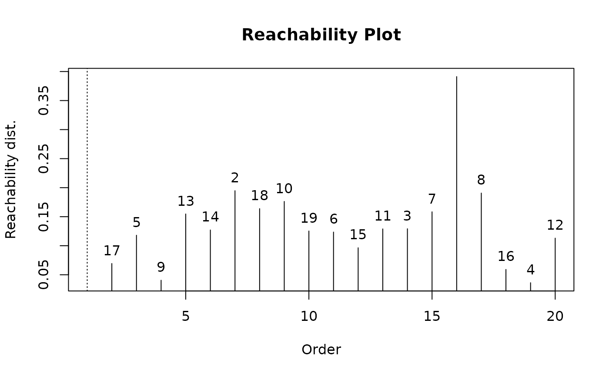
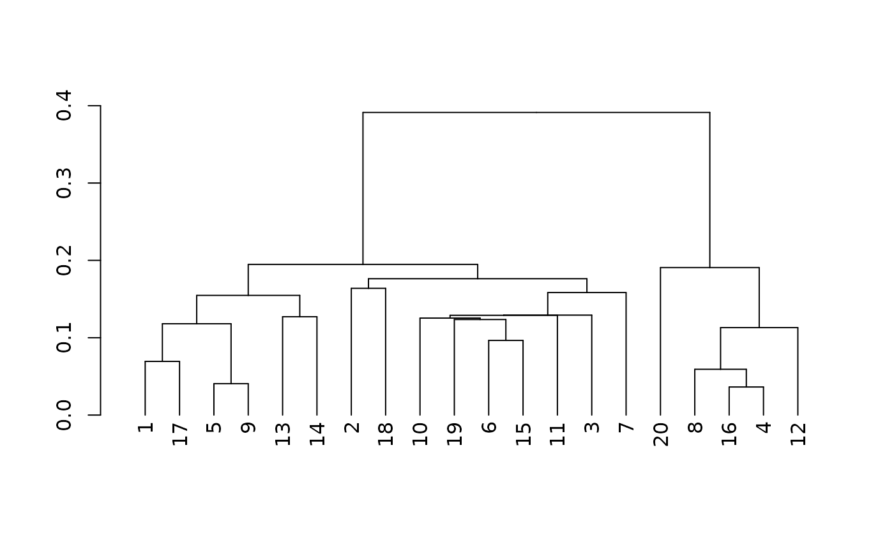
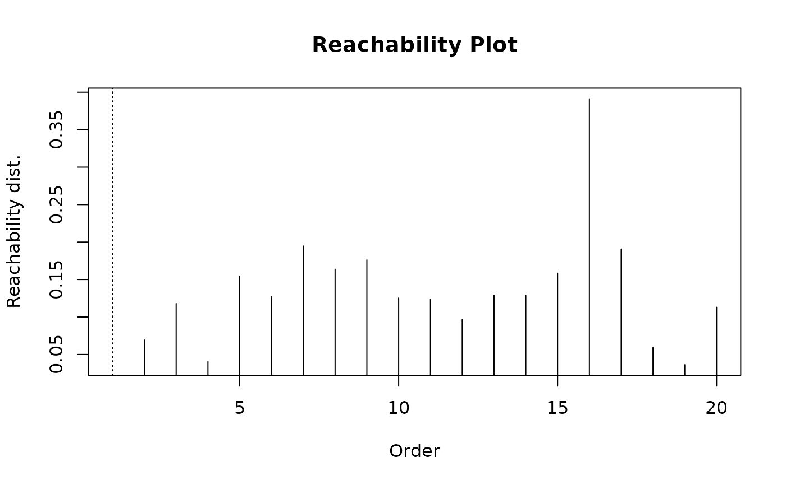

Reachability distances can be plotted to show the hierarchical relationships between data points. The idea was originally introduced by Ankerst et al (1999) to visualize the order generated by OPTICS. Later, Sanders et al (2003) showed that the visualization is useful for other hierarchical structures and introduced an algorithm to convert dendrogram representation to reachability plots. We implement dendrogram conversion and reachability plots.
Arguments
- x
object of class
reachability.- ...
graphical parameters are passed on to
plot(), or arguments for other methods.- order_labels
whether to plot text labels for each points reachability distance.
- xlab
x-axis label.
- ylab
y-axis label.
- main
Title of the plot.
- object
any object that can be coerced to class
reachability, such as an object of class optics or stats::dendrogram.
Value
An object of class reachability with components:
- order
order to use for the data points in
x.- reachdist
reachability distance for each data point in
x.
Details
Reachability Plots
A reachability plot displays the points as vertical bars, were the height is the
reachability distance between two consecutive points.
Reachability distances can be undefined when a point does not have enough
neighbors in the epsilon neighborhood. We represent these undefined cases as Inf
and represent them in the plot as a dashed line.
If many dashed lines show up for OPTICS then you need to increase eps there.
The reachability distance for the first
point is by definition not defined (it has no preceding point).
The central idea behind reachability plots is that the ordering in which points are plotted identifies underlying hierarchical density representation as mountains and valleys of high and low reachability distance.
Different hierarchical representations, such as dendrograms or reachability plots, may be preferable depending on the context. In smaller datasets, cluster memberships may be more easily identifiable through a dendrogram representation, particularly is the user is already familiar with tree-like representations. For larger datasets however, a reachability plot may be preferred for visualizing macro-level density relationships.
Reachability Plots for OPTICS
The original ordering algorithm OPTICS as described by Ankerst et al (1999) introduced the notion of reachability plots. OPTICS linearly orders the data points such that points which are spatially closest become neighbors in the ordering. Valleys represent clusters, which can be represented hierarchically. Although the ordering is crucial to the structure of the reachability plot, it's important to note that OPTICS, like DBSCAN, is not entirely deterministic and, just like the dendrogram, isomorphisms may exist. Reachability plots were shown to essentially convey the same information as the more traditional dendrogram structure by Sanders et al (2003).
A variety of cluster extraction methods have been proposed using
reachability plots. Because both cluster extraction depend directly on the
ordering OPTICS produces, they are part of the optics() interface.
Nonetheless, reachability plots can be created directly from other types of
linkage trees, and vice versa.
References
Ankerst, M., M. M. Breunig, H.-P. Kriegel, J. Sander (1999). OPTICS: Ordering Points To Identify the Clustering Structure. ACM SIGMOD international conference on Management of data. ACM Press. pp. 49–60.
Sander, J., X. Qin, Z. Lu, N. Niu, and A. Kovarsky (2003). Automatic extraction of clusters from hierarchical clustering representations. Pacific-Asia Conference on Knowledge Discovery and Data Mining. Springer Berlin Heidelberg.
Examples
set.seed(2)
n <- 20
x <- cbind(
x = runif(4, 0, 1) + rnorm(n, sd = 0.1),
y = runif(4, 0, 1) + rnorm(n, sd = 0.1)
)
plot(x, xlim = range(x), ylim = c(min(x) - sd(x), max(x) + sd(x)), pch = 20)
text(x = x, labels = seq_len(nrow(x)), pos = 3)

### run OPTICS
res <- optics(x, eps = 10, minPts = 2)
res
#> OPTICS ordering/clustering for 20 objects.
#> Parameters: minPts = 2, eps = 10, eps_cl = NA, xi = NA
#> Available fields: order, reachdist, coredist, predecessor, minPts, eps,
#> eps_cl, xi
### plot produces a reachability plot.
plot(res)
### Manually extract reachability components from OPTICS
reach <- as.reachability(res)
reach
#> Reachability plot collection for 20 objects.
#> Avg minimum reachability distance: 0.1367073
#> Available Fields: order, reachdist
### plot still produces a reachability plot; points ids
### (rows in the original data) can be displayed with order_labels = TRUE
plot(reach, order_labels = TRUE)

### Reachability objects can be directly converted to dendrograms
dend <- as.dendrogram(reach)
dend
#> 'dendrogram' with 2 branches and 20 members total, at height 0.3912521
plot(dend)

### A dendrogram can be converted back into a reachability object
plot(as.reachability(dend))
